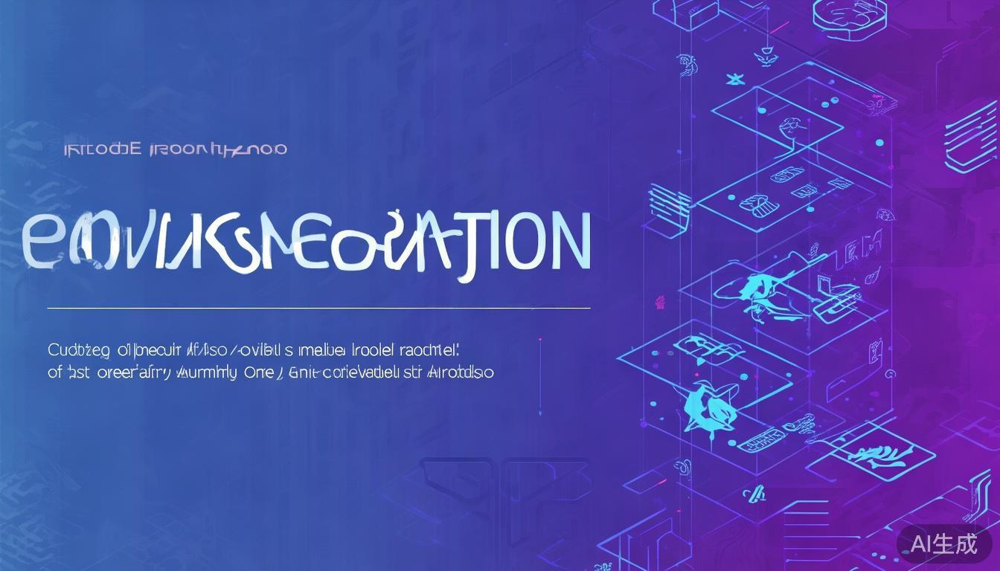

白驹 · 全局大脑 · AI 创作纪元
AI创业实战指南
AI降低了创业门槛，但也提高了竞争烈度。一个人+AI就能启动一家公司，但如何活下来、活得好？这份指南给你答案。
一、AI创业的机会图谱
1. 应用层（机会最多）
- 垂直行业AI：法律AI、医疗AI、教育AI、金融AI
- 工具型AI：写作工具、设计工具、编程工具、办公工具
- 内容型AI：AI生成内容平台、AI编辑工具
2. 中间层（技术门槛高）
- 模型微调：针对特定场景优化开源模型
- Agent平台：搭建AI工作流自动化平台
- 数据服务：数据标注、数据清洗、数据合成
3. 基础设施层（巨头游戏）
- 芯片、云计算、大模型训练——不建议个人创业者进入
二、从0到1：MVP实战

第一步：找痛点
方法：
- 观察自己工作中的重复性劳动
- 调研目标用户群体的抱怨
- 分析现有产品的差评
验证标准：
- 痛点是否真实存在？
- 用户是否愿意付费解决？
- 市场规模是否足够大？
第二步：快速验证
原则：用最小成本验证核心假设
方法：
- 不做产品，先做Landing Page收集意向用户
- 用AI手动服务第一批用户（Concierge MVP）
- 预售/众筹验证付费意愿
第三步：产品化
技术选型建议：
- 初期：调用现成API（DeepSeek/OpenAI），快速上线
- 中期：根据数据反馈，优化提示词和流程
- 后期：考虑微调模型或自研，建立壁垒
三、商业模式设计
常见模式
| 模式 | 特点 | 适合场景 | 案例 |
|---|---|---|---|
| SaaS订阅 | recurring revenue | 工具型产品 | Notion AI |
| 按量付费 | 用多少付多少 | API服务 | OpenAI API |
| Freemium | 免费+付费增值 | C端产品 | Canva |
| 定制开发 | 项目制收费 | B端服务 | 咨询公司 |
| 平台抽成 | 交易佣金 | marketplace | 淘宝 |
定价策略
- 成本加成：成本×2-3倍
- 价值定价：用户愿意付多少？节省时间的价值是多少？
- 竞品参考：与竞品持平或略低，突出差异化
四、冷启动与增长
1. 内容营销
- 公众号/小红书/知乎分享AI干货
- 案例展示：用你的产品解决真实问题
- SEO优化：抢占关键词搜索流量
2. 社群运营
- 建立用户微信群/Discord
- 定期举办线上分享
- 收集反馈，快速迭代
3. 渠道合作
- 与互补产品互相导流
- 入驻平台（Chrome商店、微信小程序）
- KOL合作推广
五、避坑指南
1. 技术陷阱
- 盲目追求最新技术
- 解决真实问题比技术先进更重要
2. 产品陷阱
- 功能大而全
- 单点突破，做到极致
3. 法律陷阱
- 忽视数据隐私和内容合规
- 前置合规审查，避免后期风险
4. 资金陷阱
- 过早烧钱扩张
- 先验证单元经济模型，再规模化
六、实战案例
案例1：AI简历优化工具
- 痛点：求职者不会写简历
- MVP：Landing Page收集1000个邮箱
- 产品：AI分析简历，给出优化建议
- 模式：9.9元/次，复购率30%
- 结果：月收入10万+
案例2：AI法律文书助手
- 痛点：小微企业请不起律师
- 产品：AI生成合同、审查合同
- 模式：199元/月订阅
- 结果：服务5000+企业，年收入千万级
案例3：AI电商详情页生成
- 痛点：中小卖家不会做详情页
- 产品：输入产品信息，AI生成详情页文案+配图
- 模式：按次收费+包月订阅
- 结果：淘宝服务市场TOP10
七、 checklist
- 找到一个真实痛点
- 验证至少10个用户愿意付费
- 上线MVP，获得第一批用户
- 实现第一笔收入
- 月增长率>20%
- 考虑融资或扩大规模
核心理念：AI创业的核心不是技术，而是「用AI解决真实问题，创造真实价值」。技术是手段，商业才是本质。
出处声明：本页内容为白驹全局大脑原创，或已标注引用来源；改编内容遵循原始项目许可证（如 MIT / CC），不侵犯原作者权益。若引用内容涉及版权问题，请联系我们更正。